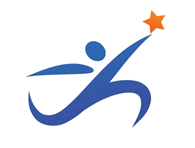
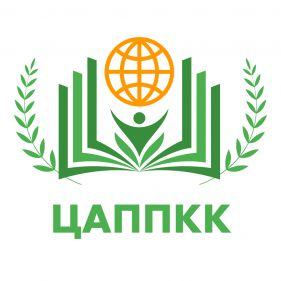
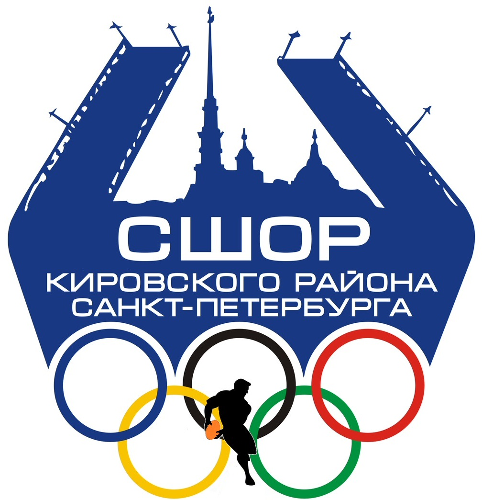
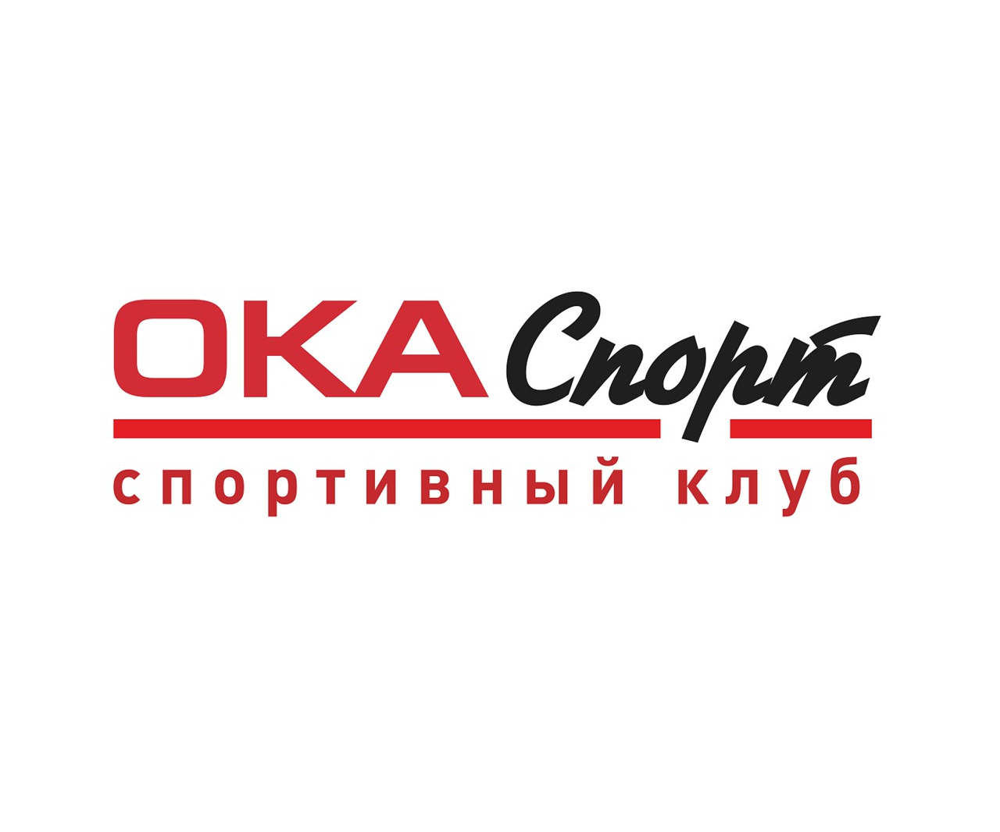
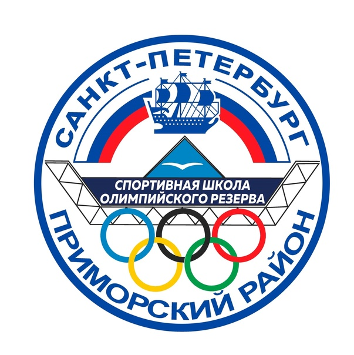
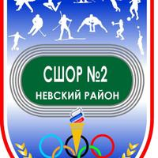

СШОР №1 Московского района
- Спортивная школа олимпийского резерва №1 Московского района
Телефон:
+7 (812) 417-65-52
+7 (812) 373-00-73
Адрес:
Санкт-Петербург, улица Ленсовета, 8, 2 этаж Район Московский
Метро:
Метро: Парк Победы

Звезда
- Звезда
Телефон:
+7 (812) 362-31-59
Адрес:
Санкт-Петербург, Леснозаводская, 3, 1—4 этаж. Район Невский
Метро:
Метро: Пролетарская, Ломоносовская

ЦАППКК
- ЦАППКК-Центральная академия профессиональной переподготовки и повышения квалификации кадров
Телефон:
+7 (800) 500-30-45
Адрес:
Санкт-Петербург, Ординарная улица, 21
Метро:
Метро: Петроградская

СШОР Кировского района
- ГБУ ДО СШОР Кировского района СПб
Телефон:
+7 (812) 570-83-05
Адрес:
Улица Зины Портновой, 21к4, Санкт-Петербург
Метро:
Метро: Ленинский проспект, Ветаранов

Ока-Спорт
- Спортивный комплекс Ока-Спорт
Телефон:
+7 (812) 921-75-90
Адрес:
Санкт-Петербург, Колпино, Октябрьская улица, 12, 1 этаж
Метро:
Метро: Рыбацкое, Звездная

СШОР Приморского района
- ГБУ ДО СШОР Приморского района Санкт-Петербурга
Телефон:
+7 (812) 393-54-24
Адрес:
Санкт-Петербург, Королёва,23
Метро:
Метро: Комендантский проспект, Пионерская

СШОР №2 Невского района
- ГБУ ДО СШОР № 2 Невского района
Телефон:
+7 (812) 319-55-48
Адрес:
ул. Подвойского, д. 31, корп. 3
Метро:
Метро: Проспект Большевиков, Улица Дыбенко